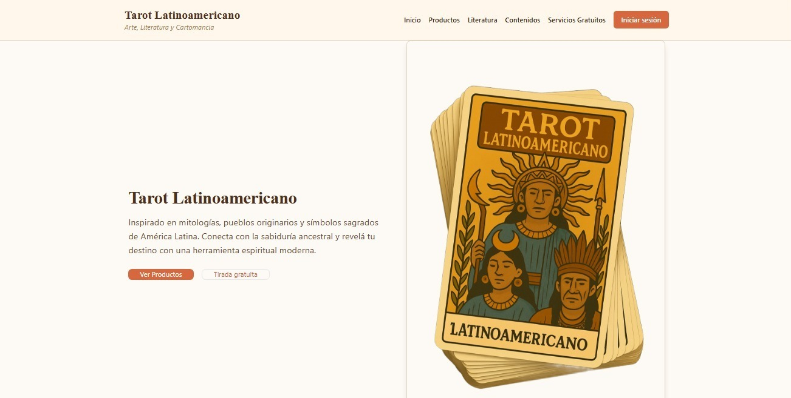

Una selección de trabajos reales, proyectos personales y desarrollos técnicos que reflejan mi experiencia como desarrollador.
Sistema web desarrollado para un cliente real, actualmente en producción. Diseñado para automatizar procesos internos, gestionar usuarios y centralizar información.
Estado: En producción
Ver proyecto en vivo
Sitio web personal desarrollado para presentar proyectos, experiencia profesional y contacto.
HTML · CSS · JavaScriptHerramienta para análisis de datos y visualización de métricas.
Python · Streamlit · PandasSistemas desarrollados durante la carrera, enfocados en lógica, estructura y buenas prácticas.
C# · SQL · JavaScriptSi te interesa alguno de estos proyectos o querés trabajar conmigo, no dudes en contactarme.
Contactame